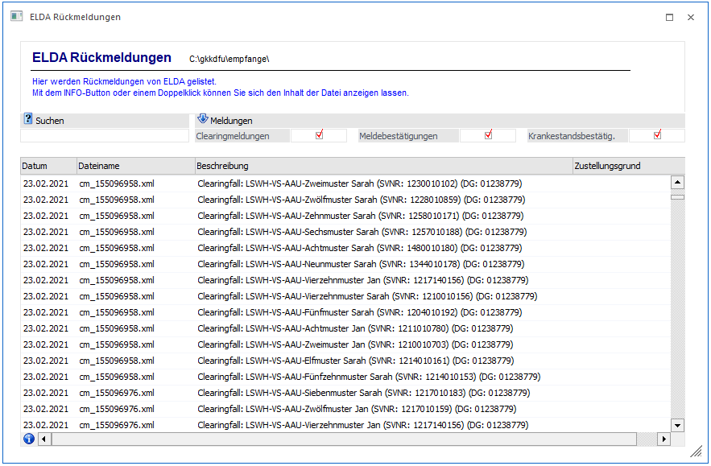
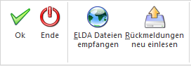

Über den Menüpunkt
1 ELDA
1 ELDA Rückmeldungen
können Rückmeldungen der ELDA (wie zum Beispiel Meldebestätigungen, Clearingfälle und Krankenstandsbestätigungen) direkt in der WinLine gesichtet werden. Es handelt sich dabei um Rückmeldungen die in der ELDA Installation im Verzeichnis "empfange" von der ELDA zur Verfügung gestellt wurden.
Voraussetzung:
Um Rückmeldungen in diesem Verzeichnis angezeigt zu bekommen, muss im Betriebsdatenstamm bei den Herstellerdaten der gültige Pfad zum "ELDA empfange Verzeichnis" im Feld "empfange" hinterlegt sein.

Hinweis:
Rückmeldungen seitens ELDA werden nur dann empfangen, wenn es eine aktive Verbindung zur ELDA gegeben hat. Eine Verbindung wird zum Beispiel durch das Versenden von Meldungen hergestellt. Um zwischenzeitlich Meldungen empfangen zu können, kann auch der Button "ELDA Dateien empfangen'" gedrückt werden.
Rückmeldungen können mittels "Doppelklick" auf die entsprechende Meldung oder mittels "Info" Button (nachdem der Fokus auf den gewünschten Eintrag gesetzt wurde) am Bildschirm geöffnet werden.
Krankenstandsbestätigungen werden direkt in die WinLine Datenbank importiert, da diese für die EFZG Berechnung benötigt werden.
Ø Suchen
Unter Suchen kann ein Suchbegriff eingegeben werden und die Daten in der Tabelle werden nur noch den Suchbegriff entsprechend angezeigt, wenn die Suche mit "OK" oder mittels "Enter" bestätigt wird.
Ø Meldungen
Mittels der Checkboxen
ü Clearingmeldungen
ü Meldebestätigungen
ü Krankenstandsbestätig.
kann selektiert werden, welche Art von Rückmeldungen angezeigt werden sollen.
Buttons

Ø OK
Durch Drücken des Buttons "OK" oder der F5-Taste werden alle Datensätze, bei denen das Suchkriterium zutrifft, angezeigt.
Ø Ende
Durch Drücken des "Ende" Buttons" oder der ESC-Taste wird das Fenster geschlossen.
Ø ELDA Dateien empfangen
Dieser Button kann nur dann angewählt werden, wenn auf dem Arbeitsplatz das Programm "ELDA WIN" installiert ist. Zusätzlich muss in den Herstellerdaten (Menüpunkt Stammdaten/Mandantenstammdaten/Betriebsdaten) der "Pfad für ELDA-Empfange-Dateien" hinterlegt werden (sollte im Standardfall C:\GKKDFU\Empfange\ sein).
Ø Rückmeldungen neu einlesen
Mit diesem Button können die durch drücken des "ELDA Dateien empfangen" Buttons die neu empfangenen Rückmeldungen in der Tabelle geladen werden.